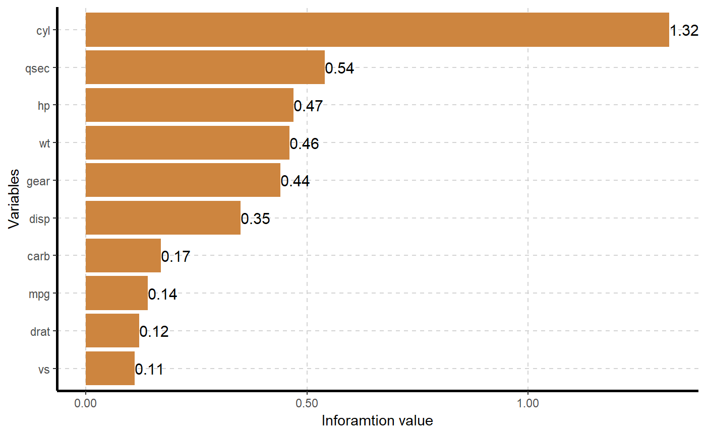

ExpCatStat.RdThis function combines results from weight of evidence, information value and summary statistics.
ExpCatStat(data,Target=NULL,result=c("Stat","IV"),clim=10,nlim=10,bins=10, Pclass=NULL,plot=FALSE,top=20,Round=2)
| data | dataframe or matrix |
|---|---|
| Target | target variable |
| result | "Stat" - summary statistics, "IV" - information value |
| clim | maximum unique levles for categorical variable. Variables will be dropped if unique levels is higher than clim for class factor/character variable |
| nlim | maximum unique values for numeric variable. |
| bins | number of bins (default is 10) |
| Pclass | reference category of target variable |
| plot | Inforamtion value barplot (default False) |
| top | for plotting top information values (default value is 20) |
| Round | round of value |
This function provides summary statistics for categorical variable
Stat-Summary statistics includes Chi square test scores, p value, Information values, Cramers V and Degree if association
IV- Weight of evidence and Information values
Columns description:
• Variable – variable name
• Target - Target variable label
• class – name of bin (variable value otherwise)
• out0 – number of good observations
• out1 – number of bad observations
• Total – Total values for each category
• pct1 – good observations / total good observations
• pct0 – bad observations / total bad observations
• odds – Odds ratio [(a/b)/(c/d)]
• woe – Weight of Evidence – calculated as ln(odds)
• iv – Information Value - ln(odds) * (pct0 – pct1)
Criteria used for categorical variable predictive power classification are
If information value is < 0.03 then predictive power = "Not Predictive"
If information value is 0.3 to 0.1 then predictive power = "Somewhat Predictive"
If information value is 0.1 to 0.3 then predictive power = "Meidum Predictive"
If information value is >0.3 then predictive power = "Highly Predictive"
# Example 1 ## Read mtcars data # Target variable "am" - Transmission (0 = automatic, 1 = manual) # Summary statistics ExpCatStat(mtcars,Target="am",result = "Stat",clim=10,nlim=10,bins=10, Pclass=1,plot=FALSE,top=20,Round=2)#> Variable Target Unique Chi-squared p-value df IV Value Cramers V #> 1 cyl am 3 8.741 0.013 2 1.32 0.52 #> 2 vs am 2 0.348 0.556 1 0.11 0.10 #> 3 gear am 3 20.945 0.000 2 0.44 0.81 #> 4 carb am 6 6.237 0.284 5 0.17 0.44 #> 5 mpg am 10 20.945 0.013 9 0.14 0.81 #> 6 disp am 10 21.636 0.010 9 0.35 0.82 #> 7 hp am 10 17.490 0.042 9 0.47 0.74 #> 8 drat am 10 21.497 0.011 9 0.12 0.82 #> 9 wt am 10 20.254 0.016 9 0.46 0.80 #> 10 qsec am 10 11.824 0.223 9 0.54 0.61 #> Degree of Association Predictive Power #> 1 Strong Highly Predictive #> 2 Weak Somewhat Predictive #> 3 Strong Highly Predictive #> 4 Strong Somewhat Predictive #> 5 Strong Somewhat Predictive #> 6 Strong Highly Predictive #> 7 Strong Highly Predictive #> 8 Strong Somewhat Predictive #> 9 Strong Highly Predictive #> 10 Strong Highly Predictive# Information value plot ExpCatStat(mtcars,Target="am",result = "Stat",clim=10,nlim=10,bins=10, Pclass=1,plot=TRUE,top=20,Round=2)#> Variable Target Unique Chi-squared p-value df IV Value Cramers V #> 1 cyl am 3 8.741 0.013 2 1.32 0.52 #> 2 vs am 2 0.348 0.556 1 0.11 0.10 #> 3 gear am 3 20.945 0.000 2 0.44 0.81 #> 4 carb am 6 6.237 0.284 5 0.17 0.44 #> 5 mpg am 10 20.945 0.013 9 0.14 0.81 #> 6 disp am 10 21.636 0.010 9 0.35 0.82 #> 7 hp am 10 17.490 0.042 9 0.47 0.74 #> 8 drat am 10 21.497 0.011 9 0.12 0.82 #> 9 wt am 10 20.254 0.016 9 0.46 0.80 #> 10 qsec am 10 11.824 0.223 9 0.54 0.61 #> Degree of Association Predictive Power #> 1 Strong Highly Predictive #> 2 Weak Somewhat Predictive #> 3 Strong Highly Predictive #> 4 Strong Somewhat Predictive #> 5 Strong Somewhat Predictive #> 6 Strong Highly Predictive #> 7 Strong Highly Predictive #> 8 Strong Somewhat Predictive #> 9 Strong Highly Predictive #> 10 Strong Highly Predictive# Inforamtion value for categorical Independent variables ExpCatStat(mtcars,Target="am",result = "IV",clim=10,nlim=10,bins=10, Pclass=1,plot=FALSE,top=20,Round=2)#> Variable Class Out_1 Out_0 TOTAL Per_1 Per_0 Odds WOE IV Ref_1 #> 1 cyl.1 4 8 3 11 0.62 0.16 0.11 1.36 0.63 1 #> 2 cyl.2 6 3 4 7 0.23 0.21 1.12 0.10 0.00 1 #> 3 cyl.3 8 2 12 14 0.15 0.63 8.53 -1.43 0.69 1 #> 4 vs.1 0 6 12 18 0.46 0.63 2.00 -0.31 0.05 1 #> 5 vs.2 1 7 7 14 0.54 0.37 0.50 0.38 0.06 1 #> 6 gear.1 3 0 15 15 0.00 0.79 0.00 0.00 0.00 1 #> 7 gear.2 4 8 4 12 0.62 0.21 6.00 1.08 0.44 1 #> 8 gear.3 5 5 0 5 0.38 0.00 0.00 0.00 0.00 1 #> 9 carb.1 1 4 3 7 0.31 0.16 0.00 0.66 0.10 1 #> 10 carb.2 2 4 6 10 0.31 0.32 0.00 -0.03 0.00 1 #> 11 carb.3 3 0 3 3 0.00 0.16 0.51 0.00 0.00 1 #> 12 carb.4 4 3 7 10 0.23 0.37 0.00 -0.48 0.07 1 #> 13 carb.5 6 1 0 1 0.08 0.00 0.96 0.00 0.00 1 #> 14 carb.6 8 1 0 1 0.08 0.00 2.37 0.00 0.00 1 #> 15 mpg.1 [10.4,13.3] 0 3 3 0.00 0.16 0.00 0.00 0.00 1 #> 16 mpg.2 (13.3,15] 1 2 3 0.08 0.11 0.00 -0.31 0.01 1 #> 17 mpg.3 (15,15.8] 1 3 4 0.08 0.16 0.44 -0.69 0.06 1 #> 18 mpg.4 (15.8,17.8] 0 3 3 0.00 0.16 1.50 0.00 0.00 1 #> 19 mpg.5 (17.8,19.2] 0 4 4 0.00 0.21 0.00 0.00 0.00 1 #> 20 mpg.6 (19.2,21] 3 0 3 0.23 0.00 0.00 0.00 0.00 1 #> 21 mpg.7 (21,21.4] 1 1 2 0.08 0.05 0.00 0.47 0.01 1 #> 22 mpg.8 (21.4,24.4] 1 3 4 0.08 0.16 0.44 -0.69 0.06 1 #> 23 mpg.9 (24.4,30.4] 4 0 4 0.31 0.00 0.71 0.00 0.00 1 #> 24 mpg.10 (30.4,33.9] 2 0 2 0.15 0.00 0.00 0.00 0.00 1 #> 25 disp.1 [71.1,78.7] 3 0 3 0.23 0.00 0.00 0.00 0.00 1 #> 26 disp.2 (78.7,108] 3 0 3 0.23 0.00 0.00 0.00 0.00 1 #> 27 disp.3 (108,141] 2 2 4 0.15 0.11 0.44 0.31 0.01 1 #> 28 disp.4 (141,160] 3 1 4 0.23 0.05 0.00 1.53 0.28 1 #> 29 disp.5 (160,168] 0 2 2 0.00 0.11 0.00 0.00 0.00 1 #> 30 disp.6 (168,276] 0 5 5 0.00 0.26 0.00 0.00 0.00 1 #> 31 disp.7 (276,301] 1 0 1 0.08 0.00 5.40 0.00 0.00 1 #> 32 disp.8 (301,351] 1 3 4 0.08 0.16 1.55 -0.69 0.06 1 #> 33 disp.9 (351,400] 0 3 3 0.00 0.16 0.00 0.00 0.00 1 #> 34 disp.10 (400,472] 0 3 3 0.00 0.16 0.00 0.00 0.00 1 #> 35 hp.1 [52,65] 2 1 3 0.15 0.05 0.00 1.10 0.11 1 #> 36 hp.2 (65,91] 3 0 3 0.23 0.00 0.00 0.00 0.00 1 #> 37 hp.3 (91,105] 1 3 4 0.08 0.16 0.00 -0.69 0.06 1 #> 38 hp.4 (105,110] 3 1 4 0.23 0.05 0.71 1.53 0.28 1 #> 39 hp.5 (110,123] 1 2 3 0.08 0.11 0.00 -0.31 0.01 1 #> 40 hp.6 (123,150] 0 2 2 0.00 0.11 0.71 0.00 0.00 1 #> 41 hp.7 (150,175] 1 2 3 0.08 0.11 5.40 -0.31 0.01 1 #> 42 hp.8 (175,205] 0 4 4 0.00 0.21 0.44 0.00 0.00 1 #> 43 hp.9 (205,245] 0 4 4 0.00 0.21 0.00 0.00 0.00 1 #> 44 hp.10 (245,335] 2 0 2 0.15 0.00 3.27 0.00 0.00 1 #> 45 drat.1 [2.76,2.93] 0 3 3 0.00 0.16 0.00 0.00 0.00 1 #> 46 drat.2 (2.93,3.07] 0 4 4 0.00 0.21 0.00 0.00 0.00 1 #> 47 drat.3 (3.07,3.15] 0 4 4 0.00 0.21 0.97 0.00 0.00 1 #> 48 drat.4 (3.15,3.23] 0 2 2 0.00 0.11 0.00 0.00 0.00 1 #> 49 drat.5 (3.23,3.69] 2 1 3 0.15 0.05 0.71 1.10 0.11 1 #> 50 drat.6 (3.69,3.77] 1 2 3 0.08 0.11 3.27 -0.31 0.01 1 #> 51 drat.7 (3.77,3.9] 3 0 3 0.23 0.00 0.00 0.00 0.00 1 #> 52 drat.8 (3.9,4.08] 2 3 5 0.15 0.16 0.00 -0.06 0.00 1 #> 53 drat.9 (4.08,4.22] 3 0 3 0.23 0.00 0.00 0.00 0.00 1 #> 54 drat.10 (4.22,4.93] 2 0 2 0.15 0.00 0.00 0.00 0.00 1 #> 55 wt.1 [1.51,1.83] 3 0 3 0.23 0.00 0.00 0.00 0.00 1 #> 56 wt.2 (1.83,2.2] 3 0 3 0.23 0.00 0.00 0.00 0.00 1 #> 57 wt.3 (2.2,2.77] 3 1 4 0.23 0.05 0.44 1.53 0.28 1 #> 58 wt.4 (2.77,3.15] 2 1 3 0.15 0.05 0.00 1.10 0.11 1 #> 59 wt.5 (3.15,3.21] 1 2 3 0.08 0.11 0.00 -0.31 0.01 1 #> 60 wt.6 (3.21,3.44] 0 4 4 0.00 0.21 0.71 0.00 0.00 1 #> 61 wt.7 (3.44,3.52] 0 2 2 0.00 0.11 3.27 0.00 0.00 1 #> 62 wt.8 (3.52,3.78] 1 3 4 0.08 0.16 5.40 -0.69 0.06 1 #> 63 wt.9 (3.78,4.07] 0 3 3 0.00 0.16 0.00 0.00 0.00 1 #> 64 wt.10 (4.07,5.42] 0 3 3 0.00 0.16 0.00 0.00 0.00 1 #> 65 qsec.1 [14.5,15.4] 2 1 3 0.15 0.05 0.00 1.10 0.11 1 #> 66 qsec.2 (15.4,16.5] 2 1 3 0.15 0.05 3.27 1.10 0.11 1 #> 67 qsec.3 (16.5,17] 3 2 5 0.23 0.11 1.55 0.74 0.09 1 #> 68 qsec.4 (17,17.3] 0 2 2 0.00 0.11 3.27 0.00 0.00 1 #> 69 qsec.5 (17.3,17.6] 0 3 3 0.00 0.16 0.00 0.00 0.00 1 #> 70 qsec.6 (17.6,18] 0 3 3 0.00 0.16 0.00 0.00 0.00 1 #> 71 qsec.7 (18,18.6] 2 1 3 0.15 0.05 0.00 1.10 0.11 1 #> 72 qsec.8 (18.6,19.4] 2 2 4 0.15 0.11 2.55 0.31 0.01 1 #> 73 qsec.9 (19.4,20] 2 1 3 0.15 0.05 3.27 1.10 0.11 1 #> 74 qsec.10 (20,22.9] 0 3 3 0.00 0.16 3.27 0.00 0.00 1 #> Ref_0 #> 1 0 #> 2 0 #> 3 0 #> 4 0 #> 5 0 #> 6 0 #> 7 0 #> 8 0 #> 9 0 #> 10 0 #> 11 0 #> 12 0 #> 13 0 #> 14 0 #> 15 0 #> 16 0 #> 17 0 #> 18 0 #> 19 0 #> 20 0 #> 21 0 #> 22 0 #> 23 0 #> 24 0 #> 25 0 #> 26 0 #> 27 0 #> 28 0 #> 29 0 #> 30 0 #> 31 0 #> 32 0 #> 33 0 #> 34 0 #> 35 0 #> 36 0 #> 37 0 #> 38 0 #> 39 0 #> 40 0 #> 41 0 #> 42 0 #> 43 0 #> 44 0 #> 45 0 #> 46 0 #> 47 0 #> 48 0 #> 49 0 #> 50 0 #> 51 0 #> 52 0 #> 53 0 #> 54 0 #> 55 0 #> 56 0 #> 57 0 #> 58 0 #> 59 0 #> 60 0 #> 61 0 #> 62 0 #> 63 0 #> 64 0 #> 65 0 #> 66 0 #> 67 0 #> 68 0 #> 69 0 #> 70 0 #> 71 0 #> 72 0 #> 73 0 #> 74 0